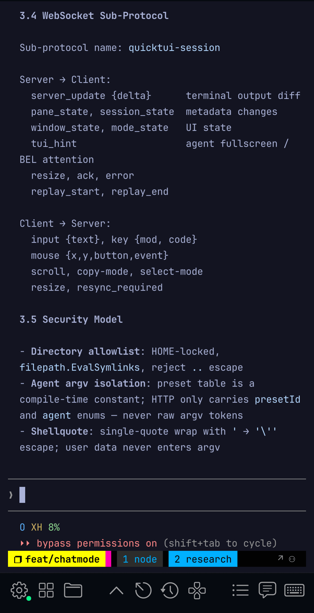
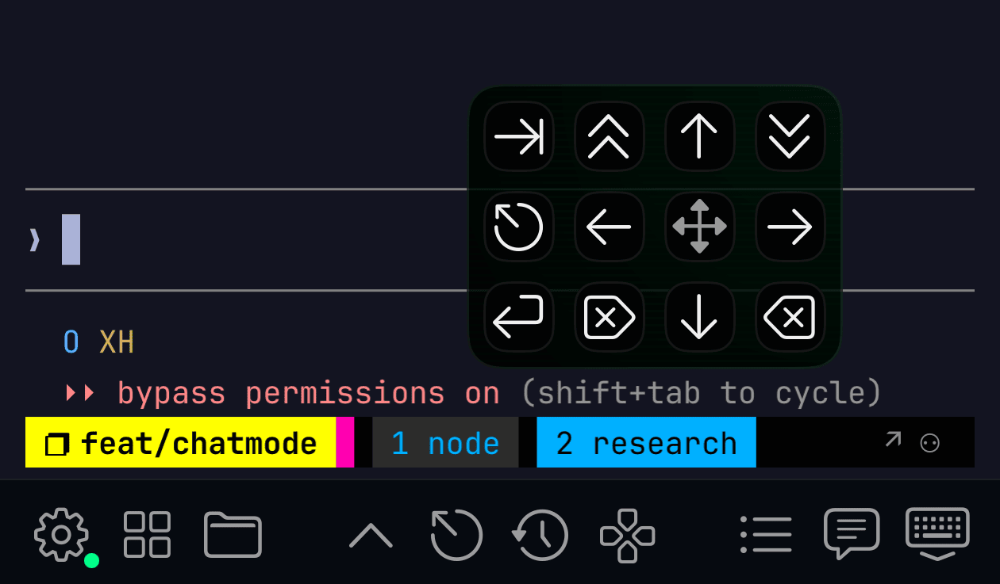
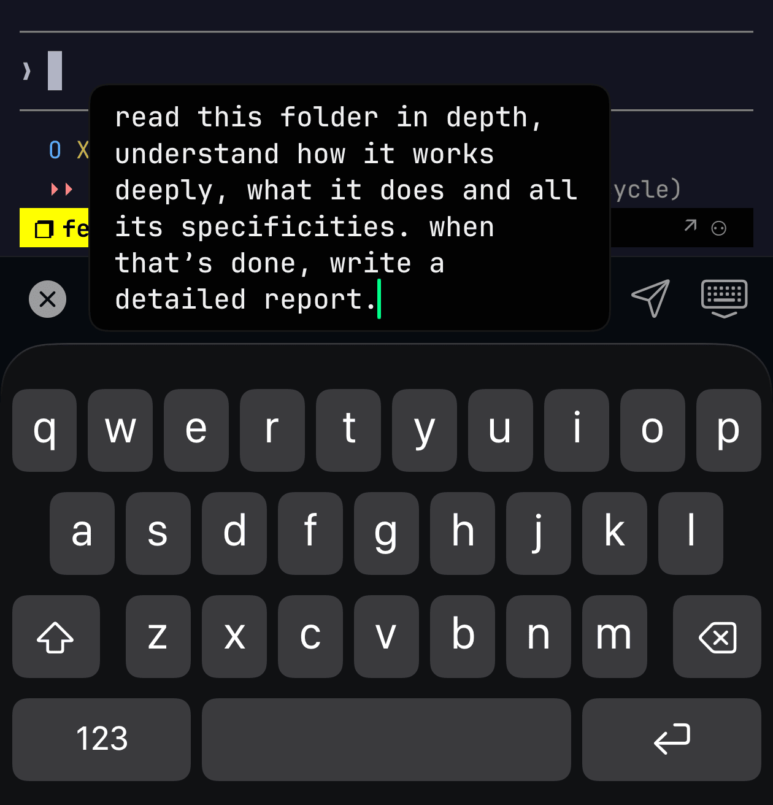
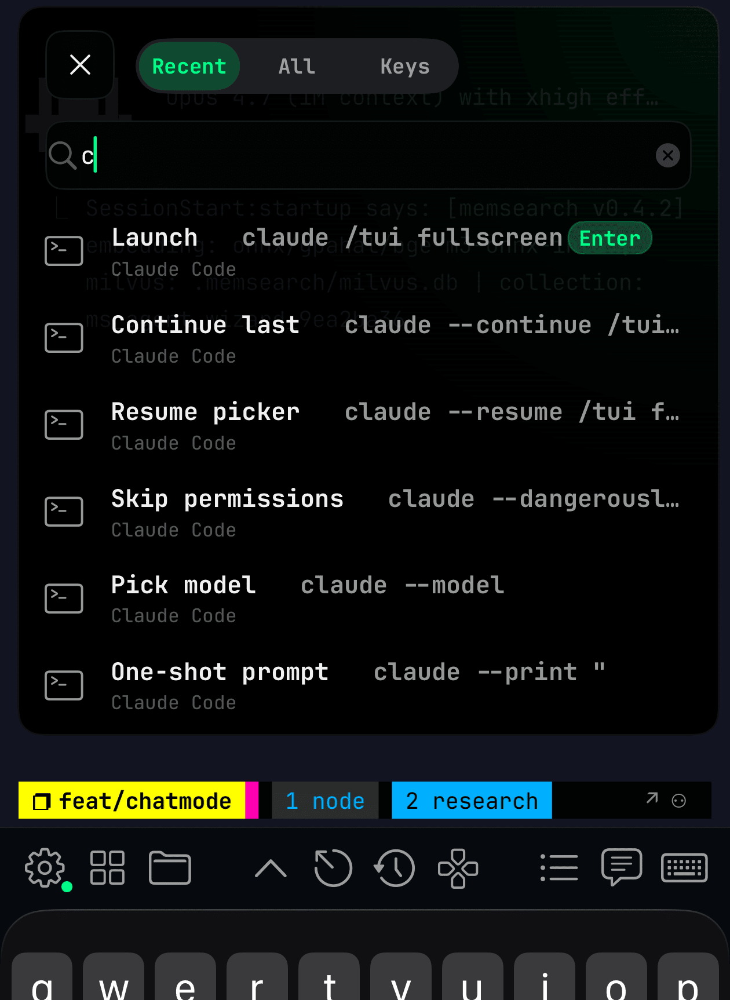
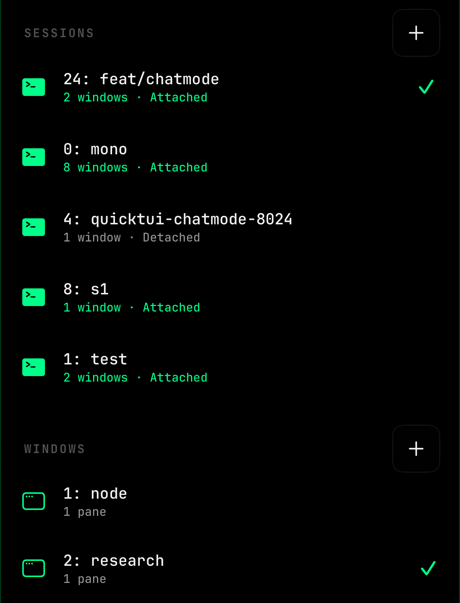
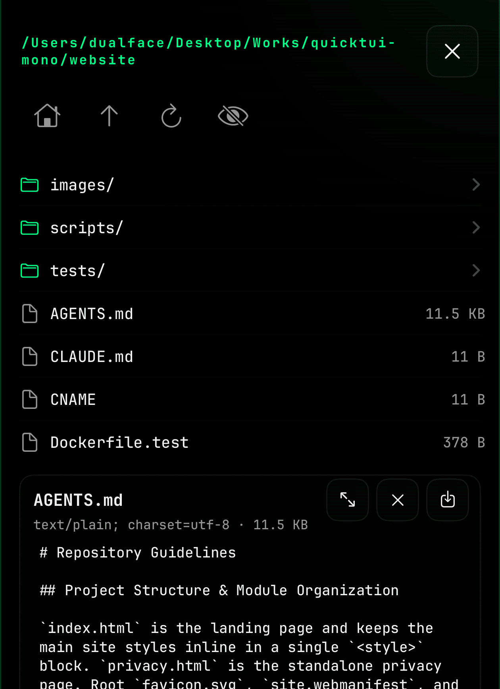

Coding agents run on your Mac.
You run them
from your phone.
Claude Code, Codex, Aider, Cursor Agent — keep them moving when you step away from the desk. Attach from anywhere, approve in seconds, walk away.

Built for reach, not tutorials.
Every primitive — session keeper, QR pairing, browser client — exists so your agents are within reach on any device you happen to be carrying.
Always attached — you're always within reach
Your agent's session lives on your server between attaches, so when you open QuickTUI on any device it's already there — output intact, cursor exactly where you left it. (tmux keeps the PTY alive under the hood.)
QR onboarding in 2 seconds
Run `quicktui-server --qrcode` on the server, scan with the iOS app — you are inside your agent's session. No token copy-paste, no IP typing.
One truth, every client
Windows, panes, zoom, scroll, copy-mode — every client sees the exact same view of what your agents are doing. Switch devices mid-task, the cursor doesn't blink.
Self-hosted, zero cloud
Your agents run where you run them — Mac, Linux, or WSL. Your code, your keys, your API quotas stay put. No account, no telemetry, no vendor in the loop.
Three ways to get attached
Add your server via Quick Setup (SSH auto-install), QR scan, or manual URL + token. An accessory bar & shortcut panel keep terminal keys one tap from your thumb.
Runs as a service, forever
Installed as a user service on macOS launchd & Linux systemd. Upgrade checks, controlled restarts, reboot survival — your agents keep supervising even when you are not watching. q.sh handles install and service registration.
Within reach on every screen.
Same session across every device. Peek on your phone during a commute. Steer from iPad at the café. Review in a browser at your desk. Your agent is wherever you are.
Pick up any screen. It's already there.
Every client — phone, tablet, browser — is a live window into the same agent session. No reconnect ritual, no scrolling back through logs. Your agent is already waiting on whichever screen you open.
- sessionclaude-code · 14d · 7 windows
- roamWi-Fi → LTE → 5G · seamless
- clientsiPhone · iPad · Safari · Chrome
- transportHTTP API · WebSocket
Your agents, wherever you happen to be.
QuickTUI isn't an IDE. It's the seam between the agents humming away on your server and the screen you happen to be holding right now.
Steer an agent from your phone
Your agent hit a confirm prompt. You're on the subway. Attach, approve, detach — 10 seconds. It keeps going without you.
iPad as agent cockpit
Magic Keyboard + QuickTUI + a beefy server = a 12" cockpit to supervise Claude Code, Aider, or a multi-hour build. Lightweight client, heavyweight agents.
Browser from any borrowed device
No install needed. Open the server URL in any modern browser, enter your token once, and you are watching your agents live — from a hotel laptop if you have to.
Long-running jobs without babysitting
Training runs, agent swarms, migrations, builds. Start it, walk away, check in from the couch. Your laptop can sleep — the job can't be bothered.
From install to daily driving.
Two ways to install the server, then the gestures you'll actually use on phone and iPad every day.
Get the App →Two paths to your server.
If you can SSH to the box, the iOS app installs the server for you. If not, run one line on the server itself. Either way, the installer detects tmux 3.2+, registers a launchd / systemd service, and saves your token to ~/.config/quicktui/config.
Browser users: visit http://<host>:8022 and paste the token once.
The pieces you'll touch every day.
Five things on screen, each doing one job.
Toolbar & D-Pad
A customizable strip of keys at the bottom — Tab, Ctrl, and your own macros organized in folders. A D-Pad overlay sits next to it with the keys you reach for most: four arrow keys, Esc, Enter, Backspace. One tap away.

Input Bar
A compact text input right above the toolbar. Tap the edit button to open, type your command, hit Send or Enter. Stays out of the way until you need it.

Command Palette
Quick launcher for terminal commands. Searchable, folder-organized, with a recent list. Slash commands send Enter automatically.

Switcher
Three-finger swipe up to summon the session switcher. Jump between tmux sessions and windows, even across different servers, in one tap.

File Browser
Browse and preview files on the server without leaving the app. Tap a file to view, grab a path, or download for later. Each pane remembers the last folder you visited.

How you actually drive the terminal from a phone or iPad. A few of these are swappable in Settings if you prefer single- and double-finger flipped.
1-finger double-tapSend Tab2-finger double-tapSend Enter1-finger swipe ↕Scroll history1-finger swipe ↔Switch tmux window2-finger swipeArrow keys3-finger swipe ←Backspace3-finger swipe ↑Open session switcherNon-interactive installs, custom ports, environment checks. Pass via sh -s --:
-y, --yesNon-interactive mode--token <string>Set access token (default: prompted)--rotate-tokenGenerate a fresh random token--addr <address>Listen address, IPv4/hostname only (default: 0.0.0.0)--port <port>Listen port (default: 8022)--term <value>TERM for tmux (default: xterm-256color)--lang <value>LANG for tmux (default: en_US.UTF-8)--previewInstall the latest server2 preview release--checkRun environment checks without installing--no-serviceSkip background service setup--uninstallRemove QuickTUI and all related filesQuestions & answers.
Grouped by topic, straight from the docs. More answers in the repo — open an issue at github.com/dualface/quicktui.
Usually the download was interrupted or corrupted — re-run the installer. If it persists, release assets may have just been updated; wait a few minutes and retry.
Also verify nothing is intercepting HTTPS traffic (e.g. a corporate proxy).
QuickTUI's server-side tmux won't render correctly when TERM=xterm-ghostty is forwarded — Ghostty's own terminfo isn't a fit for tmux inside the remote session.
Use a widely supported TERM instead. In ~/.config/quicktui/config:
QUICKTUI_TERM=xterm-256color
Then restart the service. For a manual server command:
--term xterm-256color
macOS protects Desktop, Documents, Downloads, iCloud Drive, and other system folders via TCC (Transparency, Consent, Control). The QuickTUI service runs as a background launchd agent and cannot trigger the system consent dialog, so accesses to those folders hang silently until the request times out.
Fix — grant Full Disk Access to the server binary:
- Open System Settings → Privacy & Security → Full Disk Access.
- Click the + button. In the file picker, press Cmd+Shift+G and enter ~/.local/bin, then select quicktui-server.
- Make sure the toggle next to quicktui-server is enabled.
- Back in the QuickTUI client, tap Recheck on the warning banner. No service restart needed.
If Recheck still fails, restart the service:
launchctl kickstart -k gui/$(id -u)/ai.quicktui
Why no consent dialog appears: macOS only shows the TCC consent prompt for processes launched with a UI context (Finder, Terminal, Dock). Background launchd agents have no UI, so the prompt is never displayed and the OS silently blocks until manually authorized.
The QuickTUI server runs under your user (typically systemd --user) and can only read paths your user has POSIX read+execute on. Common causes:
- Mode bits. Files mode 0600 / dirs mode 0700 are unreadable to anyone but the owner. Check with ls -ld /path.
- Parent directory missing x bit. Even if the target file is world-readable, the server can't traverse into it without execute permission on every ancestor directory.
- POSIX ACL. getfacl /path may show an explicit deny entry that overrides mode bits.
- Wrong user. If you started the server with sudo once and switched back, residual files may be owned by root. stat /path shows the owner.
- SELinux (RHEL / Fedora / Rocky). Even with correct mode, MAC may block access. Check with ausearch -m AVC -ts recent or getenforce. Temporarily test with setenforce 0 (do not leave permissive in production).
- AppArmor / Snap confinement (Ubuntu). If you installed quicktui-server via snap, it can't read files outside the snap home. The recommended install path is ~/.local/bin/quicktui-server (no confinement).
- Mount options. A mount with noexec or read-only flags may surface as EACCES on some operations. Check findmnt /path.
Fix steps:
- Run ls -ld /full/path/to/dir on the failing path and every parent. Confirm the user running quicktui-server has r-x on dirs and r-- on files.
- Identify which user the service runs as: systemctl --user show quicktui -p MainPID, then ps -o user= -p <PID>.
- Adjust permissions: chmod o+rx /path for shared paths, or use ACLs (setfacl -m u:<user>:rx /path) for selective access.
- If SELinux blocks access, add a file context label or use audit2allow to generate a policy module — see your distro's SELinux docs.
- Tap Recheck in the client. No service restart required.
If still failing, check logs: journalctl --user -u quicktui -f while reproducing.